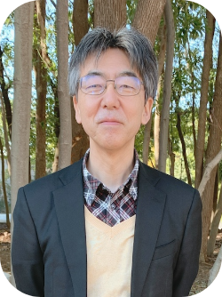

教員・学生研究紹介

Fumikazu Osuka
大須賀 史和
哲学・倫理学
（ロシアを中心に）
Q1.現在の研究テーマ（または専門分野）について教えてください。
主として20世紀前半のロシア哲学ですが、亡命してヨーロッパに出た人たちも含みますので、ロシア語による哲学的思索の成果を検討しているという方が正確かもしれません。内容的には東方正教の影響下で展開された人間論、社会論、言語論などが中心ですが、ヨーロッパの近代思想の影響も強いので、関連のある神学・哲学・倫理学分野のものにもなるべく目を通すようにしています。
Q2.教員になるまで、どんな学術・実務上の経験がありますか？
大学院生時代には留学して専門分野の資料を集めたり、関連する講義を聴講するなどして、実際にその国の研究状況やレベルを知ることができたのは大きな経験でした。職務としては関連する研究センターで任期制の非常勤研究員をしたことがあります。 また、実務としては外国語の専門文献の翻訳、内外の研究書の書評、専門分野についての講演などを行いました。
Q3.研究指導で大切にしていることについて教えてください。
専門的な研究を行う上での基本をしっかり身につけてもらいたいと考えています。外国に関わる研究であれば、そこで使われている外国語の運用能力は不可欠ですし、それぞれの学術領域ごとで学ぶべきとされている基本的な知識や方法論を知らずに研究はできないはずです。 その上で既存の研究にはない新しいテーマを見つけることができれば、新領域を開拓することができるでしょうし、他の仕事をする場合にも課題を自ら発見し解決する力となるはずです。
Q4受験生へメッセージ（大学院生へ）
大学院では専門分野での研究を行うことに目が行きがちですが、専門性を深めるためには周辺領域の知見をうまく活かす必要も出てきます。短い在学期間でバランスをとるのは難しいですが、広い視野と深い専門的知見を持てるような努力はどんな場合でも決して無駄になりませんので、頑張ってほしいと思います。